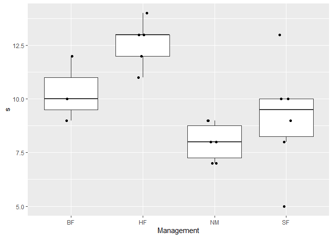
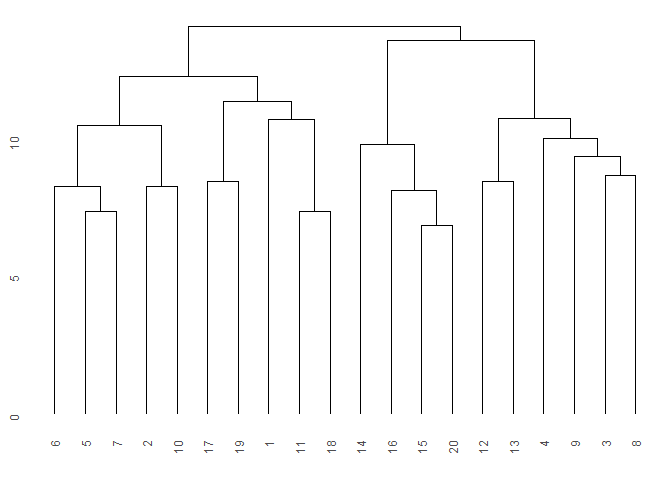
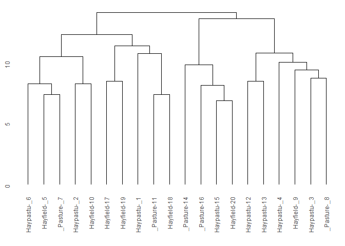
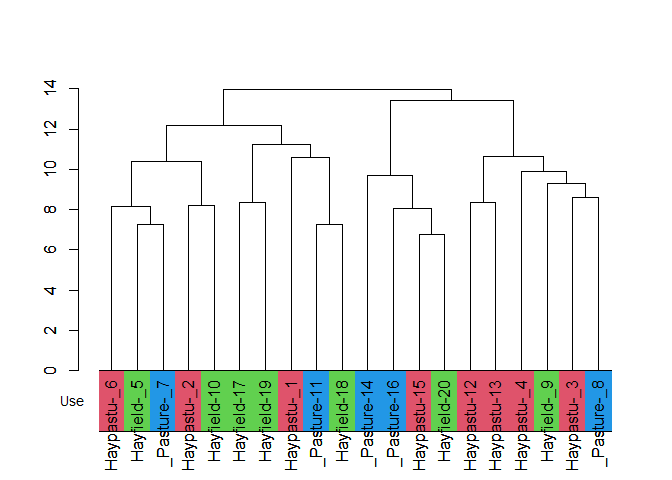
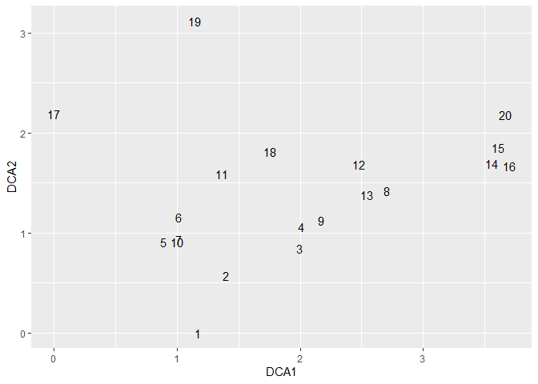
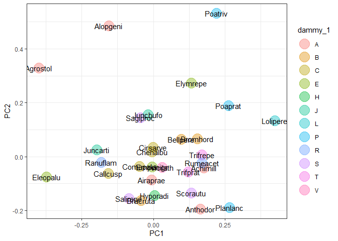

The goal of ecan is to support ecological analysis.
Installation
install.packages("ecan")
# development
# install.packages("devtools")
remotes::install_github("matutosi/ecan")You can use almost the same functionality in shiny.
Example
You can read docs in https://matutosi.github.io/ecan/
Prepare and convert data
library(ecan)
library(vegan)
#> Loading required package: permute
#> Loading required package: lattice
#> This is vegan 2.6-6.1
library(dplyr)
library(stringr)
library(tibble)
library(ggplot2)
data(dune)
data(dune.env)
df <-
table2df(dune) %>%
dplyr::left_join(tibble::rownames_to_column(dune.env, "stand"))
#> Joining with `by = join_by(stand)`
sp_dammy <-
tibble::tibble("species" = colnames(dune),
"dammy_1" = stringr::str_sub(colnames(dune), 1, 1),
"dammy_6" = stringr::str_sub(colnames(dune), 6, 6))
df <-
df %>%
dplyr::left_join(sp_dammy)
#> Joining with `by = join_by(species)`
df
#> # A tibble: 197 × 10
#> stand species abundance A1 Moisture Management Use Manure dammy_1
#> <chr> <chr> <dbl> <dbl> <ord> <fct> <ord> <ord> <chr>
#> 1 1 Achimill 1 2.8 1 SF Haypastu 4 A
#> 2 1 Elymrepe 4 2.8 1 SF Haypastu 4 E
#> 3 1 Lolipere 7 2.8 1 SF Haypastu 4 L
#> 4 1 Poaprat 4 2.8 1 SF Haypastu 4 P
#> 5 1 Poatriv 2 2.8 1 SF Haypastu 4 P
#> 6 2 Achimill 3 3.5 1 BF Haypastu 2 A
#> 7 2 Alopgeni 2 3.5 1 BF Haypastu 2 A
#> 8 2 Bellpere 3 3.5 1 BF Haypastu 2 B
#> 9 2 Bromhord 4 3.5 1 BF Haypastu 2 B
#> 10 2 Elymrepe 4 3.5 1 BF Haypastu 2 E
#> # ℹ 187 more rows
#> # ℹ 1 more variable: dammy_6 <chr>Diversity index
div <-
shdi(df) %>%
dplyr::left_join(select_one2multi(df, "stand"))
#> Joining with `by = join_by(stand)`
group <- "Management"
div_index <- "s"
div %>%
ggplot(aes(x = .data[[group]], y = .data[[div_index]])) +
geom_boxplot(outlier.shape = NA) + # do not show outer point
geom_jitter(height = 0, width = 0.1)
Indicator Species Analysis (ISA, ind val)
ind_val(df, group = "Moisture", row_data = TRUE)
#> $relfrq
#> 1 2 3 4
#> Achimill 0.7142857 0.50 0.0000000 0.0
#> Elymrepe 0.4285714 0.50 0.0000000 0.5
#> Lolipere 1.0000000 0.75 0.1428571 0.5
#> Poaprat 1.0000000 1.00 0.2857143 0.5
#> Poatriv 0.7142857 0.75 0.4285714 1.0
#> Alopgeni 0.1428571 0.50 0.4285714 1.0
#> Bellpere 0.4285714 0.75 0.0000000 0.0
#> Bromhord 0.4285714 0.50 0.0000000 0.0
#> Scorautu 0.8571429 1.00 0.8571429 1.0
#> Trifrepe 0.8571429 0.75 0.7142857 1.0
#> Agrostol 0.0000000 0.50 0.8571429 1.0
#> Bracruta 0.7142857 0.75 0.7142857 1.0
#> Cirsarve 0.0000000 0.25 0.0000000 0.0
#> Sagiproc 0.1428571 0.25 0.4285714 1.0
#> Anthodor 0.4285714 0.50 0.1428571 0.0
#> Planlanc 0.7142857 0.50 0.0000000 0.0
#> Rumeacet 0.4285714 0.00 0.0000000 1.0
#> Trifprat 0.4285714 0.00 0.0000000 0.0
#> Juncbufo 0.1428571 0.00 0.1428571 1.0
#> Eleopalu 0.0000000 0.00 0.7142857 0.0
#> Juncarti 0.0000000 0.00 0.5714286 0.5
#> Ranuflam 0.0000000 0.00 0.8571429 0.0
#> Vicilath 0.2857143 0.25 0.0000000 0.0
#> Hyporadi 0.1428571 0.25 0.1428571 0.0
#> Chenalbu 0.0000000 0.00 0.1428571 0.0
#> Comapalu 0.0000000 0.00 0.2857143 0.0
#> Callcusp 0.0000000 0.00 0.4285714 0.0
#> Airaprae 0.0000000 0.25 0.1428571 0.0
#> Salirepe 0.1428571 0.00 0.2857143 0.0
#> Empenigr 0.0000000 0.00 0.1428571 0.0
#>
#> $relabu
#> 1 2 3 4
#> Achimill 0.48780488 0.5121951 0.00000000 0.00000000
#> Elymrepe 0.25531915 0.2978723 0.00000000 0.44680851
#> Lolipere 0.46204620 0.3927393 0.05280528 0.09240924
#> Poaprat 0.35036496 0.3576642 0.08759124 0.20437956
#> Poatriv 0.24806202 0.2713178 0.15503876 0.32558140
#> Alopgeni 0.02846975 0.2241993 0.19928826 0.54804270
#> Bellpere 0.40000000 0.6000000 0.00000000 0.00000000
#> Bromhord 0.39506173 0.6049383 0.00000000 0.00000000
#> Scorautu 0.33922261 0.2226148 0.24028269 0.19787986
#> Trifrepe 0.27636364 0.2290909 0.18909091 0.30545455
#> Agrostol 0.00000000 0.2818792 0.38926174 0.32885906
#> Bracruta 0.29197080 0.1532847 0.24817518 0.30656934
#> Cirsarve 0.00000000 1.0000000 0.00000000 0.00000000
#> Sagiproc 0.05161290 0.2258065 0.18064516 0.54193548
#> Anthodor 0.33333333 0.5185185 0.14814815 0.00000000
#> Planlanc 0.70588235 0.2941176 0.00000000 0.00000000
#> Rumeacet 0.50000000 0.0000000 0.00000000 0.50000000
#> Trifprat 1.00000000 0.0000000 0.00000000 0.00000000
#> Juncbufo 0.06060606 0.0000000 0.09090909 0.84848485
#> Eleopalu 0.00000000 0.0000000 1.00000000 0.00000000
#> Juncarti 0.00000000 0.0000000 0.50000000 0.50000000
#> Ranuflam 0.00000000 0.0000000 1.00000000 0.00000000
#> Vicilath 0.63157895 0.3684211 0.00000000 0.00000000
#> Hyporadi 0.19047619 0.3333333 0.47619048 0.00000000
#> Chenalbu 0.00000000 0.0000000 1.00000000 0.00000000
#> Comapalu 0.00000000 0.0000000 1.00000000 0.00000000
#> Callcusp 0.00000000 0.0000000 1.00000000 0.00000000
#> Airaprae 0.00000000 0.5384615 0.46153846 0.00000000
#> Salirepe 0.27272727 0.0000000 0.72727273 0.00000000
#> Empenigr 0.00000000 0.0000000 1.00000000 0.00000000
#>
#> $indval
#> 1 2 3 4
#> Achimill 0.348432056 0.25609756 0.000000000 0.00000000
#> Elymrepe 0.109422492 0.14893617 0.000000000 0.22340426
#> Lolipere 0.462046205 0.29455446 0.007543612 0.04620462
#> Poaprat 0.350364964 0.35766423 0.025026069 0.10218978
#> Poatriv 0.177187154 0.20348837 0.066445183 0.32558140
#> Alopgeni 0.004067107 0.11209964 0.085409253 0.54804270
#> Bellpere 0.171428571 0.45000000 0.000000000 0.00000000
#> Bromhord 0.169312169 0.30246914 0.000000000 0.00000000
#> Scorautu 0.290762241 0.22261484 0.205956588 0.19787986
#> Trifrepe 0.236883117 0.17181818 0.135064935 0.30545455
#> Agrostol 0.000000000 0.14093960 0.333652924 0.32885906
#> Bracruta 0.208550574 0.11496350 0.177267987 0.30656934
#> Cirsarve 0.000000000 0.25000000 0.000000000 0.00000000
#> Sagiproc 0.007373272 0.05645161 0.077419355 0.54193548
#> Anthodor 0.142857143 0.25925926 0.021164021 0.00000000
#> Planlanc 0.504201681 0.14705882 0.000000000 0.00000000
#> Rumeacet 0.214285714 0.00000000 0.000000000 0.50000000
#> Trifprat 0.428571429 0.00000000 0.000000000 0.00000000
#> Juncbufo 0.008658009 0.00000000 0.012987013 0.84848485
#> Eleopalu 0.000000000 0.00000000 0.714285714 0.00000000
#> Juncarti 0.000000000 0.00000000 0.285714286 0.25000000
#> Ranuflam 0.000000000 0.00000000 0.857142857 0.00000000
#> Vicilath 0.180451128 0.09210526 0.000000000 0.00000000
#> Hyporadi 0.027210884 0.08333333 0.068027211 0.00000000
#> Chenalbu 0.000000000 0.00000000 0.142857143 0.00000000
#> Comapalu 0.000000000 0.00000000 0.285714286 0.00000000
#> Callcusp 0.000000000 0.00000000 0.428571429 0.00000000
#> Airaprae 0.000000000 0.13461538 0.065934066 0.00000000
#> Salirepe 0.038961039 0.00000000 0.207792208 0.00000000
#> Empenigr 0.000000000 0.00000000 0.142857143 0.00000000
#>
#> $maxcls
#> Achimill Elymrepe Lolipere Poaprat Poatriv Alopgeni Bellpere Bromhord
#> 1 4 1 2 4 4 2 2
#> Scorautu Trifrepe Agrostol Bracruta Cirsarve Sagiproc Anthodor Planlanc
#> 1 4 3 4 2 4 2 1
#> Rumeacet Trifprat Juncbufo Eleopalu Juncarti Ranuflam Vicilath Hyporadi
#> 4 1 4 3 3 3 1 2
#> Chenalbu Comapalu Callcusp Airaprae Salirepe Empenigr
#> 3 3 3 2 3 3
#>
#> $indcls
#> Achimill Elymrepe Lolipere Poaprat Poatriv Alopgeni Bellpere
#> 0.34843206 0.22340426 0.46204620 0.35766423 0.32558140 0.54804270 0.45000000
#> Bromhord Scorautu Trifrepe Agrostol Bracruta Cirsarve Sagiproc
#> 0.30246914 0.29076224 0.30545455 0.33365292 0.30656934 0.25000000 0.54193548
#> Anthodor Planlanc Rumeacet Trifprat Juncbufo Eleopalu Juncarti
#> 0.25925926 0.50420168 0.50000000 0.42857143 0.84848485 0.71428571 0.28571429
#> Ranuflam Vicilath Hyporadi Chenalbu Comapalu Callcusp Airaprae
#> 0.85714286 0.18045113 0.08333333 0.14285714 0.28571429 0.42857143 0.13461538
#> Salirepe Empenigr
#> 0.20779221 0.14285714
#>
#> $pval
#> Achimill Elymrepe Lolipere Poaprat Poatriv Alopgeni Bellpere Bromhord
#> 0.261 0.438 0.074 0.352 0.493 0.056 0.150 0.204
#> Scorautu Trifrepe Agrostol Bracruta Cirsarve Sagiproc Anthodor Planlanc
#> 0.797 0.687 0.396 0.582 0.317 0.067 0.354 0.087
#> Rumeacet Trifprat Juncbufo Eleopalu Juncarti Ranuflam Vicilath Hyporadi
#> 0.084 0.143 0.004 0.023 0.210 0.001 0.688 1.000
#> Chenalbu Comapalu Callcusp Airaprae Salirepe Empenigr
#> 1.000 0.453 0.080 0.762 0.608 1.000
#>
#> $error
#> [1] 0
#>
#> attr(,"class")
#> [1] "indval"
ind_val(df, group = "Management")
#> Joining with `by = join_by(numeric_Management)`
#> # A tibble: 30 × 4
#> Management species ind.val p.value
#> <fct> <chr> <dbl> <dbl>
#> 1 SF Elymrepe 0.188 0.697
#> 2 SF Alopgeni 0.547 0.042
#> 3 SF Agrostol 0.472 0.059
#> 4 SF Cirsarve 0.167 1
#> 5 SF Sagiproc 0.241 0.574
#> 6 SF Chenalbu 0.167 1
#> 7 BF Achimill 0.386 0.131
#> 8 BF Lolipere 0.45 0.066
#> 9 BF Poaprat 0.379 0.181
#> 10 BF Bellpere 0.362 0.154
#> # ℹ 20 more rows
ind_val(df, group = "Use")
#> Joining with `by = join_by(numeric_Use)`
#> # A tibble: 30 × 4
#> Use species ind.val p.value
#> <ord> <chr> <dbl> <dbl>
#> 1 Haypastu Elymrepe 0.292 0.305
#> 2 Haypastu Lolipere 0.259 0.827
#> 3 Haypastu Poaprat 0.288 0.826
#> 4 Haypastu Poatriv 0.451 0.113
#> 5 Haypastu Alopgeni 0.359 0.176
#> 6 Haypastu Agrostol 0.269 0.586
#> 7 Haypastu Cirsarve 0.125 1
#> 8 Haypastu Sagiproc 0.178 0.82
#> 9 Haypastu Juncbufo 0.118 0.863
#> 10 Haypastu Chenalbu 0.125 1
#> # ℹ 20 more rows
ind_val(df, group = "Manure")
#> Joining with `by = join_by(numeric_Manure)`
#> # A tibble: 30 × 4
#> Manure species ind.val p.value
#> <ord> <chr> <dbl> <dbl>
#> 1 4 Elymrepe 0.5 0.051
#> 2 4 Lolipere 0.351 0.215
#> 3 4 Poaprat 0.315 0.258
#> 4 4 Bellpere 0.248 0.47
#> 5 4 Cirsarve 0.333 0.298
#> 6 2 Achimill 0.309 0.276
#> 7 2 Poatriv 0.299 0.428
#> 8 2 Bromhord 0.173 0.712
#> 9 2 Anthodor 0.178 0.76
#> 10 2 Rumeacet 0.522 0.047
#> # ℹ 20 more rowsCluster analysis
library(ggdendro)
library(dendextend)
#> Registered S3 method overwritten by 'dendextend':
#> method from
#> rev.hclust vegan
#>
#> ---------------------
#> Welcome to dendextend version 1.17.1
#> Type citation('dendextend') for how to cite the package.
#>
#> Type browseVignettes(package = 'dendextend') for the package vignette.
#> The github page is: https://github.com/talgalili/dendextend/
#>
#> Suggestions and bug-reports can be submitted at: https://github.com/talgalili/dendextend/issues
#> You may ask questions at stackoverflow, use the r and dendextend tags:
#> https://stackoverflow.com/questions/tagged/dendextend
#>
#> To suppress this message use: suppressPackageStartupMessages(library(dendextend))
#> ---------------------
#>
#> Attaching package: 'dendextend'
#> The following object is masked from 'package:ggdendro':
#>
#> theme_dendro
#> The following object is masked from 'package:permute':
#>
#> shuffle
#> The following object is masked from 'package:stats':
#>
#> cutree
cls <- cluster(dune, c_method = "average", d_method = "euclidean")
ggdendro::ggdendrogram(cls)
indiv <- "stand"
group <- "Use"
ggdendro::ggdendrogram(cls_add_group(cls, df, indiv, group))
#> Joining with `by = join_by(stand)`
col <- cls_color(cls, df, indiv, group)
#> Joining with `by = join_by(stand)`
#> Joining with `by = join_by(Use)`
cls <-
cls_add_group(cls, df, indiv, group) %>%
stats::as.dendrogram()
#> Joining with `by = join_by(stand)`
labels_colors(cls) <- gray(0)
plot(cls)
dendextend::colored_bars(colors = col, cls, group, y_shift = 0, y_scale = 3)
par(new = TRUE)
plot(cls)
Ordination
ord_dca <- ordination(dune, o_method = "dca")
ord_pca <-
df %>%
df2table() %>%
ordination(o_method = "pca")
ord_dca_st <-
ord_extract_score(ord_dca, score = "st_scores")
ord_dca_st %>%
ggplot(aes(DCA1, DCA2, label = rownames(.))) +
geom_text()
indiv <- "species"
group <- "dammy_1"
ord_pca_sp <-
ord_add_group(ord_pca, score = "sp_scores", df, indiv, group)
#> Joining with `by = join_by(species)`
ord_pca_sp %>%
ggplot(aes(PC1, PC2, label = rownames(.))) +
geom_point(aes(col = .data[[group]]), alpha = 0.4, size = 7) +
geom_text() +
theme_bw()
Citation
Toshikazu Matsumura (2022) Ecological analysis tools with R. https://github.com/matutosi/ecan/.